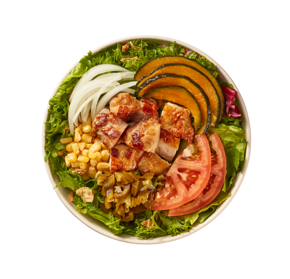

- 칠리베이컨웜볼
- 매콤달콤한 감칠맛이 매력적인 샐러디
NO.1 베스트 메뉴

- 로스트닭다리살샐러디
-
닭다리살과 달콤한 단호박, 상큼한 토마토,
매콤한 할라피뇨가 만난 다채로운 맛

- 에그베이컨 샌드
- 귀리번 속 담맥한 계란과
짭쪼름한 베이컨의 꿀조합
Please call out concierge on 1-800-997-4210
메뉴 보러가기 
음식을 통해 사람들의 삶을 즐겁고 건강하게 만든다
샐러디
샐러디키친
샐러디팜
2013년 겨울, 평범한 대학생이었던 두 청년은 선릉역 뒷골목에 작은 식당을 열었습니다.
미숙한 손길이 곳곳에 묻어 있던 이 식당이 한 가지 특별했던 점은 한 끼 식사로 샐러드를 판매했다는 것입니다.
그러나 당시만 하더라도 샐러드를 '식사'로 여기는 사람들이 드물었기 때문에 식당의 앞날은 불투명하기만 했죠.
매일같이 마주하는 어려움 속, 작은 식당을 지탱한 것은 기름진 식문화를 보다 신선하고 건강하게 바꾸겠다는 의지였습니다.
그렇게 다양한 문제를 해결하고 개선하는 동안 식단 트렌드에도 변화가 찾아왔고,
10명 남짓의 손님들이 찾아오던 작은 식당은 어느새 하루 3만명의 손님들을 맞이하는 브랜드가 되었죠.
샐러디는 이제 웜볼, 랩, 샌드위치 등 더욱 다양한 메뉴군과 함께,
샐러드 전문점을 넘어 건강한 패스트푸드로 도약하고자 합니다.
더 맛있고 건강한 메뉴들로 보다 많은 사람들에게 즐거움과 건강함을 선사하는 브랜드가 되겠습니다.
샐러디키친은 국내에서 손꼽히는 규모와 최신 설비를 갖춘 채소믹스 가공 공장입니다.
매일 공급되는 신선한 채소원물을 전처리·절단·세척·소독·탈수 후 소포장하여 가맹점에 공급합니다.
매장에서는 배송된 채소믹스를 개봉 및 검수한 후 바로 사용할 수 있습니다.
샐러디키친은 샐러디의 핵심 식재료인 채소믹스 품질을 유지하고 공급을 원활하게 함으로써 매장 운영에 도움을 주며,
샐러디가 업계 NO.1 브랜드로서 더욱 앞서갈 수 있는 원동력이자 지속성을 갖출 수 있게 하는데 핵심적인 역할을 합니다.
샐러디팜은 핵심 식재료인 채소원물을 재배하는 샐러디 전용 농장입니다.
샐러디는 시중에서 쉽게 접할 수 없는 멀티리프 계열의 유럽형 채소를 직접 재배함으로써 메뉴의 맛과 식감을 극대화하고 있습니다.
전북 진안고원에 위치한 샐러디팜에서는 계절에 관계없이 1년 내내 안정적인 재배가 가능하며,
특히 최근 도입한 수경재배방식(NFT)은 공급의 안정성은 물론 원물의 신선도를 한층 높이는데 기여하고 있습니다.


영양성분
균형
샐러디는 3대 영양소인 탄수화물, 단백질, 지방의 적절한 분배와 균형을 추구합니다. 개개인의 식습관에 따라 탄수화물, 단백질, 지방간의 구성비율이 다양한 샐러디의 메뉴들을 선택할 수 있습니다.
더하기
일반적인 식습관을 가지고 있는 대부분의 사람들은 비타민, 무기질, 식이섬유 섭취가 부족합니다. 샐러디의 다양한 종류의 채소와 토핑들은 평소 섭취가 부족한 영양소들을 더하는데 도움을 줍니다.
빼기
샐러디의 메뉴들은 다른 일반적인 음식 대비 당, 포화지방, 나트륨 함량이 적습니다. 대부분의 성인은 세 가지 영양소를 권장량에 비해 더 많이 섭취하고 있습니다. 샐러디는 기존 메뉴에서 빼야 할 영양소는 줄여가고, 맛과 품질을 유지하는 선에서 레시피 개선에 대한 연구를 지속하고 있습니다.
영양 정보 보러가기